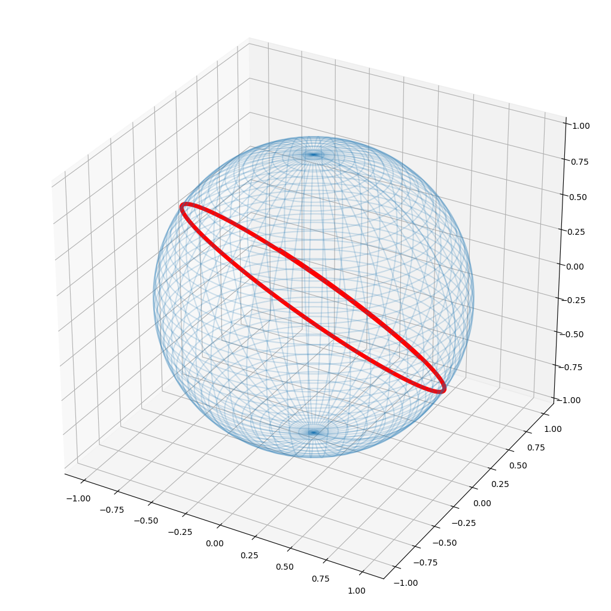
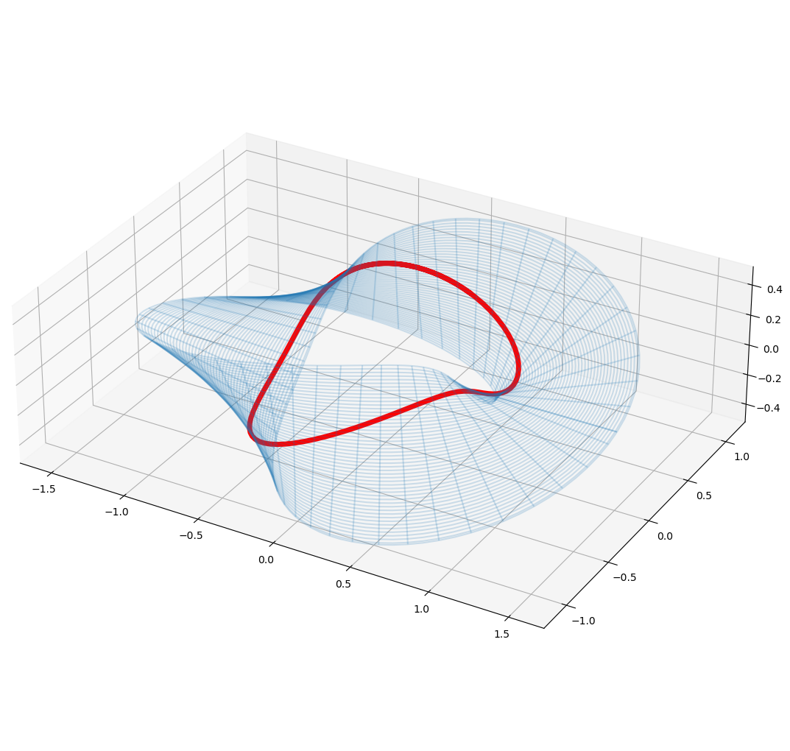

import numpy as np
import matplotlib.pyplot as plt
import scipy.integrate
import scipy.optimize
from sympy import sin, cos, symbols, lambdify, Matrix, vectorGeodesics on Curved Surfaces
In this post, I try to find and illustrate geodesics on 2-D curved surfaces that are embedded in 3-D space. Due to a specific question from a friend of mine, the main goal is to find closed geodesics on a Möbius strip.
A geodesic is a curve in the surface with no transversal acceleration, i.e. a straight line. E.g. the shortest path between two points is a geodesic. Any path connecting the two points is a geodesic, if and only if a rope, which is aligned along this curve on the surface, does not change its shape under tension.
We follow the definitions and formalism in https://de.wikipedia.org/wiki/Christoffelsymbole. We assume to have a parametrization of the curved surface which embed them into 3-D euclidean space by the function \[X: (u,v) \rightarrow (x,y,z) \in \mathbb R^3.\]
Christoffel symbols \(\Gamma^a_{bc}\) can be calculated with the identities \[\begin{align} \frac{\partial^2 X}{\partial u^2} &= \Gamma^1_{11} \frac{\partial X}{\partial u} + \Gamma^2_{11}\frac{\partial X}{\partial v} + h_{11} N\,,\\[0.5em] \frac{\partial^2 X}{\partial u \partial v} &= \Gamma^1_{12} \frac{\partial X}{\partial u} + \Gamma^2_{12}\frac{\partial X}{\partial v} + h_{12} N\,,\\[0.5em] \frac{\partial^2 X}{\partial v \partial u} &= \Gamma^1_{21} \frac{\partial X}{\partial u} + \Gamma^2_{21}\frac{\partial X}{\partial v} + h_{21} N\,,\\[0.5em] \frac{\partial^2 X}{\partial v^2} &= \Gamma^1_{22} \frac{\partial X}{\partial u} + \Gamma^2_{22}\frac{\partial X}{\partial v} + h_{22} N\,. \end{align}\]
Given a curve \(\gamma(t) = X(u(t), v(t))\) on the surface, and using the definition \(u_1=u\) and \(u_2=v\), the tangential (in-plane) acceleration can be writen as \[(\ddot\gamma)^\top = \left(\ddot u_1 + \sum_{i,j = 1}^2 \Gamma^1_{ij} \dot u_i \dot u_j \right)\frac{\partial X}{\partial u_1} + \left(\ddot u_2 + \sum_{i,j=1}^2 \Gamma^2_{ij} \dot u_i \dot u_j \right)\frac{\partial X}{\partial u_2}.\] For a geodesic, we expect this to acceleration vanish. Therefore \[\ddot u_k + \sum_{i,j = 1}^2 \Gamma^k_{ij} \dot u_i \dot u_j = 0, \quad \text{for } k=1,2. \] This differential equation of the curves parameters \(u(t), v(t)\) can be solved to find a geodesic curve.
In the follwing implementation, a semi-analytic approach is chosen: The surface parametrization and its derivates are symbolically treated, the evaluation of Christoffel symbols and solving of the geodaetic differential equation is performed numerically. This is in our view the most flexibel and robust way, as it doesn’t require inversion of analytic functions.
Helper Functions
def plot_surface(surface, line=None):
fig = plt.figure(figsize=(13,13))
ax = fig.add_subplot(projection='3d')
surface = (np.squeeze(c) for c in surface) # unpack the coordinates X,Y,Z
ax.plot_wireframe(*surface, alpha=0.2)
ax.set_box_aspect([ub - lb for lb, ub in (getattr(ax, f'get_{a}lim')() for a in 'xyz')])
if line is not None:
line = (np.squeeze(c) for c in line)
ax.plot(*line, color='red', linewidth=5)
return axdef geodesic(X, u_symbol, v_symbol, y0, tmax=10, solver_event=None):
"""Solve the geodesic equation given the surface X and return the curves parameters."""
def Christoffel_Gamma(u, v):
"""calculates the Christoffel symbol value at point (u,v). Needs first- and
second-order derivatives of euclidean X coordantes (x,y,z) with respect to the
plane parameters / inner coordinates (u,v)"""
# second derivates
dX_du2 = dX_du2_num(u, v)
dX_dv2 = dX_dv2_num(u, v)
dX_dudv = dX_dudv_num(u, v)
# first-order derivates and normal vector matrix
dX_du = dX_du_num(u, v)
dX_dv = dX_dv_num(u, v)
N = np.cross(dX_du, dX_dv, axis=0) # normal vector
dX_matrix = np.hstack([dX_du, dX_dv, N])
# express second-order derivative in first-derivatives -> Christoffel symbol
gamma_uu = np.linalg.solve(dX_matrix, dX_du2)[0:2] # = \Gamma^k_uu, k=u or v
gamma_uv = np.linalg.solve(dX_matrix, dX_dudv)[0:2] # = \Gamma^k_uv, k=u or v
gamma_vv = np.linalg.solve(dX_matrix, dX_dv2)[0:2] # = \Gamma^k_vv, k=u or v
return (gamma_uu, gamma_uv, gamma_vv)
def geodesic_equation(t, y):
"""Implements geodesic equation for ODE solver. Second-order eqn. are mapped to
system of first-order differential equations: dy/dt = geodesic_eqn(t, y)
t: parameter of line
y: = (u, u', v, v') with plane coordinates (u,v) and their derivatves
"""
u, dudt, v, dvdt = y # state variables
gamma_uu, gamma_uv, gamma_vv = Christoffel_Gamma(u, v)
# Geodesic equation, see [https://de.wikipedia.org/wiki/Christoffelsymbole]:
# $$ u_k'' = - \sum_ij gamma^k_ij * u'_i * u'_j for all k $$
# we use coordinates (u,v), these map to u_k with: u_1 = u, u_2 = v
du_dt2 = -(gamma_uu * dudt**2 + 2 * gamma_uv * dudt * dvdt + gamma_vv * dvdt**2)
# return vector with derivatives (u', u'', v', v'')
derivates = np.array([dudt, du_dt2[0,0], dvdt, du_dt2[1,0]])
return derivates
u = u_symbol
v = v_symbol
# symbolic first- and second-order derivatives
dX_du = X.diff(u)
dX_dv = X.diff(v)
dX_du2 = X.diff(u,u)
dX_dudv = X.diff(u, v)
dX_dv2 = X.diff(v, v)
# ... and their numerical functions
X_num = lambdify((u, v), X, 'numpy')
dX_du_num = lambdify((u, v), dX_du, 'numpy')
dX_dv_num = lambdify((u, v), dX_dv, 'numpy')
dX_du2_num = lambdify((u, v), dX_du2, 'numpy')
dX_dudv_num = lambdify((u, v), dX_dudv, 'numpy')
dX_dv2_num = lambdify((u, v), dX_dv2, 'numpy')
sol = scipy.integrate.solve_ivp(geodesic_equation, [0, tmax], y0, dense_output=True,
events=solver_event)
# return the solver object if events were provided, otherwise only return function
if solver_event:
return sol
else:
return lambda t: sol.sol(t)[[0,2]] # return u and v coordinate tuple only Flat Plane in Polar Coordinates
Test the geodesics calculation on a flat surface defined with polar coordinates. We expect straight line :)
u, v = symbols('u v') # u = radius, v = angle phi
# Express euclidean coordinates (x,y,z) in terms of plane parameters (u,v)
X = Matrix([u * cos(v),
u * sin(v),
u * (cos(v) + sin(v))])
# first-order derivatives
dX_du = X.diff(u)
dX_dv = X.diff(v)
# ... and their numerical functions
X_num = lambdify((u, v), X, 'numpy')
dX_du_num = lambdify((u, v), dX_du, 'numpy')
dX_dv_num = lambdify((u, v), dX_dv, 'numpy')
X\(\displaystyle \left[\begin{matrix}u \cos{\left(v \right)}\\u \sin{\left(v \right)}\\u \left(\sin{\left(v \right)} + \cos{\left(v \right)}\right)\end{matrix}\right]\)
Just for fun, show plane, a curve and the phi and r coordinate basis vectors:
# calculate surface points for certain coordinate range
u_grid, v_grid = np.meshgrid(np.linspace(0, 1, 100),
np.linspace(0, 2*np.pi, 100))
surface = X_num(u_grid, v_grid)
line = X_num(0.5, np.linspace(0, 2*np.pi, 100)) # define arbitrary line
# show the basis vector for the local tangent plane at some points
u_grid, v_grid = np.meshgrid(np.linspace(0, 1, 5),
np.linspace(0, 2*np.pi, 20))
points = X_num(u_grid, v_grid)
vec = dX_du_num(u_grid, v_grid) /10
vec2 = dX_dv_num(u_grid, v_grid) /10
ax = plot_surface(surface, line)
ax.quiver3D(*(c for c in points), *(v for v in vec), color='green')
ax.quiver3D(*(c for c in points), *(v for v in vec2), color='red');For sure, the red line is not a geodesic, so let’s try to turn on the machinery…
# solve the geodesic equation:
tmax = 3 # maximum length of line
y0 = [.5, -.5, 0, 1] # initial coordinates and derivatives (u, u', v, v'), determines direction and starting point
g = geodesic(X, u, v, y0, tmax)
# show it
t = np.linspace(0,tmax,100)
plot_surface(surface, X_num(g(t)[0], g(t)[1]));It looks like we have a straight line, ie. a geodesic in the flat plane! :-D
Let’s have a look at the (u,v) coordinates of the geodesic. After all, they probably look more interesting…
fig = plt.figure(figsize=(10, 6))
ax = fig.add_subplot()
ax.plot(g(t)[0], g(t)[1])
ax.set_xlabel('r')
ax.set_ylabel('phi')
plt.title('Geodesic on Flat Plane in Polar Coordinates');Sphere
u, v = symbols('u v') # u = phi, v = angle theta
# Euclidean Mapping (u,v) -> (x,y,z)
R0 = 1
X = Matrix([R0 * cos(u)*sin(v),
R0 * sin(u)*sin(v),
R0 * cos(v)])
X_num = lambdify((u, v), X, 'numpy')
# calculate surface points for certain coordinate range
u_grid, v_grid = np.meshgrid(np.linspace(0, 2*np.pi, 100),
np.linspace(0, np.pi, 100))
surface = X_num(u_grid, v_grid)tmax = 10 # maximum length of line
y0 = [1, 1, np.pi/2+.7, 0] # initial u, u', v, v', determines direction and starting point
g = geodesic(X, u, v, y0, tmax)
# show it
t = np.linspace(0, tmax, 100)
_ = plot_surface(surface, X_num(g(t)[0], g(t)[1]))
Looks like a great circle, i.e. a geodesic. Check!
Torus
u, v = symbols('u v')
R0, R1 = 1, 0.25
X = Matrix([R0 * cos(u) + R1 * cos(u) * cos(v),
R0 * sin(u) + R1 * sin(u) * cos(v),
R1 * sin(v)])
X_num = lambdify((u, v), X, 'numpy')
# calculate surface points
u_grid, v_grid = np.meshgrid(np.linspace(0, 2*np.pi, 100),
np.linspace(0, 2*np.pi, 100))
surface = X_num(u_grid, v_grid)%matplotlib inline
tmax = 7
y0 = [0, 0, 0, 1] # point towards v coordinate
g = geodesic(X, u, v, y0, tmax)
t = np.linspace(0, tmax, 100)
ax = plot_surface(surface, X_num(g(t)[0], g(t)[1]))
# a different geodesic: point towards u coordinate only
y0 = [0, 1, 0, 0]
g = geodesic(X, u, v, y0, tmax)
line = X_num(g(t)[0], g(t)[1])
line = (np.squeeze(c) for c in line)
ax.plot(*line, color='red', linewidth=5)
# a third geodesic: inclined in both parameters
y0 = [0, .1, 0, 1]
tmax=35
g = geodesic(X, u, v, y0, tmax)
t = np.linspace(0, tmax, 300)
line = X_num(g(t)[0], g(t)[1])
line = (np.squeeze(c) for c in line)
ax.plot(*line, color='green', linewidth=5)[<mpl_toolkits.mplot3d.art3d.Line3D at 0x7f625415bbe0>]Looks like geodesics one would expect… Check! And now to the serious stuff:
Cone
TODO, might look nice…
Möbius Strip
u, v = symbols('u v')
R = 1
X = Matrix([(R + u * cos(0.5 * v)) * cos(v),
(R + u * cos(0.5 * v)) * sin(v),
u * sin(0.5 * v)])
X_num = lambdify((u, v), X, 'numpy')
# calculate surface points
u_grid, v_grid = np.meshgrid(np.linspace(-1, 1, 100),
np.linspace(0, 2*np.pi, 100))
surface = X_num(u_grid, v_grid)
X\(\displaystyle \left[\begin{matrix}\left(u \cos{\left(0.5 v \right)} + 1\right) \cos{\left(v \right)}\\\left(u \cos{\left(0.5 v \right)} + 1\right) \sin{\left(v \right)}\\u \sin{\left(0.5 v \right)}\end{matrix}\right]\)
Closed Loop Geodesic
We don’t want to find any geodesic, but a closed one. Therefore we need some preparations. Starting the geodesic at a point (u,v), we need to find the good direction to shoot if off, in order to hit the same point after roundtrip again:
tmax = 5 # max t parameter = max geodesic length
u_start = 0 # starting point u
v_start = 0 # ... and v
# define end coordinates which correspond to a closed loop
u_end_target = - u_start # Möbius strip: u -> -u after one turn
v_end_target = v_start + 2*np.pi # one single turndef closed_loop_metric(du_dt):
"""Returns a measure of how good we got a closed loop given a du/dt starting direction."""
def u_crossing_event(t, y):
"""Used in scipy.integrate.solve_ivp(event=) of geodesics() function,
used to detect target u values -> potential closed loop."""
return (y[0] - u_end_target)
y0 = [u_start, du_dt, v_start, 1] # fixed dv/dt=1 in order to go along strip
g = geodesic(X, u, v, y0 , tmax, solver_event=u_crossing_event)
#print(g.y_events)
if len(g.y_events[0]) == 0:
return 100
# find v in events of u_end_target crossings, which is closest to v_end_target
closest_idx = np.argmin(abs(g.y_events[0][:, 2] - v_end_target))
u_end, v_end = g.y_events[0][closest_idx, [0,2]]
return (u_end_target - u_end)**2 + (v_end_target - v_end)**2With that, we can searching optimal du/dt direction. (Set some starting point in the neighbourhood, which can be ound by studying geodesic (u,v) plots manually)
minimizer = scipy.optimize.minimize_scalar(closed_loop_metric, bracket=[-.7, -.8])
print(minimizer)
du_dt_closedloop = minimizer.x fun: 1.858207977514734e-14
message: '\nOptimization terminated successfully;\nThe returned value satisfies the termination criteria\n(using xtol = 1.48e-08 )'
nfev: 23
nit: 18
success: True
x: -1.5117115896978943Let’s have a look at this curve with the found du/dt value:
y0 = [u_start, du_dt_closedloop, v_start, 1] # as defined in closed_loop_metric()
g = geodesic(X, u, v, y0, tmax)%matplotlib inline
fig = plt.figure()
ax = fig.add_subplot()
ax.set_xlabel('v')
ax.set_ylabel('u')
# start and end point
ax.plot([v_start, v_end_target], [u_start, u_end_target], 'o', color='red')
t = np.linspace(0, tmax, 100)
line = (g(t)[1], g(t)[0])
ax.plot(*line);_ = plot_surface(surface, X_num(g(t)[0], g(t)[1]))While we arrived at the same starting pint, the geodesics cuts itself at an angle and is not closed.
Closed Geodesics, Take II
Experimenting with the initial values showed that (u,v)=(0,\(\pi\)) might yield better results:
tmax = 5 # max t parameter = max geodesic length
u_start = 0 # starting point u
v_start = np.pi # ... and v
# define end coordinates which correspond to a closed loop
u_end_target = - u_start # Möbius strip: u -> -u after one turn
v_end_target = v_start + 2*np.pi # one single turnSearch optimal direction. ( See Experiments section below for chosen starting points 0.5, 0.51)
minimizer = scipy.optimize.minimize_scalar(closed_loop_metric, bracket=[0.5, 0.51])
print(minimizer)
du_dt_closedloop = minimizer.x fun: 4.479991192779563e-13
message: '\nOptimization terminated successfully;\nThe returned value satisfies the termination criteria\n(using xtol = 1.48e-08 )'
nfev: 25
nit: 17
success: True
x: 0.6641064541349162y0 = [u_start, du_dt_closedloop, v_start, 1] # as defined in closed_loop_metric()
g = geodesic(X, u, v, y0, tmax)fig = plt.figure()
ax = fig.add_subplot()
ax.set_xlabel('v')
ax.set_ylabel('u')
# start and end point
ax.plot([v_start, v_end_target], [u_start, u_end_target], 'o', color='red')
t = np.linspace(0, tmax, 100)
line = (g(t)[1], g(t)[0])
ax.plot(*line);_ = plot_surface(surface, X_num(g(t)[0], g(t)[1]))Here we arrived at a properly closed geodesic on the Möbius strip. Other starting value for u_start might yield others as well.
Triple Twisted Strip
Three times twisted strip
u, v = symbols('u v')
R = 1
X = Matrix([(R + u * cos(1.5 * v)) * cos(v),
(R + u * cos(1.5 * v)) * sin(v),
u * sin(1.5 * v)])
X_num = lambdify((u, v), X, 'numpy')
# calculate surface points
u_grid, v_grid = np.meshgrid(np.linspace(-.5, .5, 100),
np.linspace(0, 2*np.pi, 100))
surface = X_num(u_grid, v_grid)
X\(\displaystyle \left[\begin{matrix}\left(u \cos{\left(1.5 v \right)} + 1\right) \cos{\left(v \right)}\\\left(u \cos{\left(1.5 v \right)} + 1\right) \sin{\left(v \right)}\\u \sin{\left(1.5 v \right)}\end{matrix}\right]\)
Search a closed geodesic:
tmax = 6 # max t parameter = max geodesic length
u_start = 0 # starting point u
v_start = np.pi/2/1.5 # ... and v
# define end coordinates which correspond to a closed loop
u_end_target = - u_start # Möbius strip: u -> u after one turn
v_end_target = v_start + 2*np.pi # one single turnSearch optimal direction.
minimizer = scipy.optimize.minimize_scalar(closed_loop_metric, bracket=[0.2, 0.3])
print(minimizer)
du_dt_closedloop = minimizer.x fun: 7.121210237517629e-11
message: '\nOptimization terminated successfully;\nThe returned value satisfies the termination criteria\n(using xtol = 1.48e-08 )'
nfev: 34
nit: 30
success: True
x: 0.31788575631551347y0 = [u_start, du_dt_closedloop, v_start, 1] # as defined in closed_loop_metric()
g = geodesic(X, u, v, y0, tmax)fig = plt.figure()
ax = fig.add_subplot()
ax.set_xlabel('v')
ax.set_ylabel('u')
# start and end point
ax.plot([v_start, v_end_target], [u_start, u_end_target], 'o', color='red')
t = np.linspace(0, tmax, 100)
line = (g(t)[1], g(t)[0])
ax.plot(*line);_ = plot_surface(surface, X_num(g(t)[0], g(t)[1]))We successfully arrived at the closed geodesics! let’s export the data:
Doubly Twisted Strip
u, v = symbols('u v')
R = 1
X = Matrix([(R + u * cos(1 * v)) * cos(v),
(R + u * cos(1 * v)) * sin(v),
u * sin(1 * v)])
X_num = lambdify((u, v), X, 'numpy')
# calculate surface points
u_grid, v_grid = np.meshgrid(np.linspace(-.5, .5, 100),
np.linspace(0, 2*np.pi, 100))
surface = X_num(u_grid, v_grid)
X\(\displaystyle \left[\begin{matrix}\left(u \cos{\left(v \right)} + 1\right) \cos{\left(v \right)}\\\left(u \cos{\left(v \right)} + 1\right) \sin{\left(v \right)}\\u \sin{\left(v \right)}\end{matrix}\right]\)
Closed Geodesic - Take I
tmax = 6 # max t parameter = max geodesic length
u_start = 0 # starting point u
v_start = np.pi # ... and v
# define end coordinates which correspond to a closed loop
u_end_target = u_start # non-Möbius strip: u -> u after one turn
v_end_target = v_start + 2*np.pi # one single turnSearch optimal direction.
minimizer = scipy.optimize.minimize_scalar(closed_loop_metric, bracket=[0.5, 0.51])
print(minimizer)
du_dt_closedloop = minimizer.x fun: 1.9317193557273604e-12
message: '\nOptimization terminated successfully;\nThe returned value satisfies the termination criteria\n(using xtol = 1.48e-08 )'
nfev: 24
nit: 17
success: True
x: 0.5568187609997342y0 = [u_start, du_dt_closedloop, v_start, 1] # as defined in closed_loop_metric()
g = geodesic(X, u, v, y0, tmax)fig = plt.figure()
ax = fig.add_subplot()
ax.set_xlabel('v')
ax.set_ylabel('u')
# start and end point
ax.plot([v_start, v_end_target], [u_start, u_end_target], 'o', color='red')
t = np.linspace(0, tmax, 100)
line = (g(t)[1], g(t)[0])
ax.plot(*line);These (u,v) coordinates show that we dont have a closed geodesic. New try…
Closed Geodesic - Take II
tmax = 6 # max t parameter = max geodesic length
u_start = 0 # starting point u
v_start = np.pi/2 # ... and v
# define end coordinates which correspond to a closed loop
u_end_target = u_start # non-Möbius strip: u -> u after one turn
v_end_target = v_start + 2*np.pi # one single turnSearch optimal direction.
minimizer = scipy.optimize.minimize_scalar(closed_loop_metric, bracket=[0.3, .31])
print(minimizer)
du_dt_closedloop = minimizer.x fun: 1.1346961251873202e-13
message: '\nOptimization terminated successfully;\nThe returned value satisfies the termination criteria\n(using xtol = 1.48e-08 )'
nfev: 25
nit: 18
success: True
x: 0.4467328464205437y0 = [u_start, du_dt_closedloop, v_start, 1] # as defined in closed_loop_metric()
g = geodesic(X, u, v, y0, tmax)fig = plt.figure()
ax = fig.add_subplot()
ax.set_xlabel('v')
ax.set_ylabel('u')
# start and end point
ax.plot([v_start, v_end_target], [u_start, u_end_target], 'o', color='red')
t = np.linspace(0, tmax, 100)
line = (g(t)[1], g(t)[0])
ax.plot(*line);_ = plot_surface(surface, X_num(g(t)[0], g(t)[1]))
We successfully arrived at a closed geodesic on the doubly twisted strip!